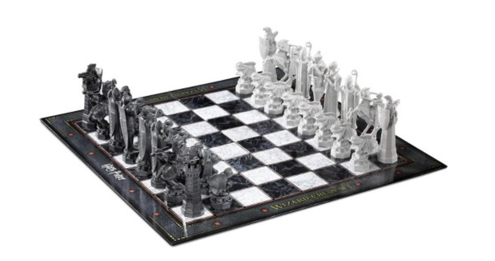

Chess-Program-Requirements
by Carson Kempf
Game Assignment Set: Chess

Rules
- Normal chess rules
Exception
Instead of the official three board state repetition draw rule:
For the last 8 moves:
If (no capture OR no promotions OR no pawn movement) AND (moves {0,1,2,3} == {4,5,6,7}):
A draw occurs
# {0,1,2,3} == {4,5,6,7} if the starting position (rank and file) and ending position (rank and file) of the moves are identical
AI Framework
make_move()
- Fill in the
make_move()function of the AI class
Each call to make_move():
- AI player returns a legal move
- Use the search algorithm specified in the assignment to select which legal move
Note
- NEVER modify the member variables of the AI framework classes
- IMPLEMENT the state of the board & all data-structures
Input
Initial States and FEN Notation
- Program must support board states in FEN notation
- FEN starting position
rnbqkbnr/pppppppp/8/8/8/8/PPPPPPPP/RNBQKBNR w KQkq - 0 1
- And after the move 1.e4:
rnbqkbnr/pppppppp/8/8/4P3/8/PPPP1PPP/RNBQKBNR b KQkq e3 0 1
- And then after 1…c5:
rnbqkbnr/pp1ppppp/8/2p5/4P3/8/PPPP1PPP/RNBQKBNR w KQkq c6 0 2
- And then after 2.Nf3:
rnbqkbnr/pp1ppppp/8/2p5/4P3/5N2/PPPP1PPP/RNBQKB1R b KQkq - 1 2
A FEN record contains six fields, each separated by a space. The fields are as follows:
- Piece placement data:
-
Each rank is described, starting with rank 8 and ending with rank 1, with a “/” between each one; within each rank, the contents of the squares are described in order from the a-file to the h-file.
-
Each piece is identified by a single letter taken from the standard English names in algebraic notation (pawn = “P”, knight = “N”, bishop = “B”, rook = “R”, queen = “Q” and king = “K”).
-
White pieces are designated using uppercase letters (“PNBRQK”), while black pieces use lowercase letters (“pnbrqk”).
-
A set of one or more consecutive empty squares within a rank is denoted by a digit from “1” to “8”, corresponding to the number of squares.
-
Active color: “w” means that White is to move; “b” means that Black is to move.
-
Castling availability:
-
If neither side has the ability to castle, this field uses the character “-“.
-
Otherwise, this field contains one or more letters: “K” if White can castle kingside, “Q” if White can castle queenside, “k” if Black can castle kingside, and “q” if Black can castle queenside.
-
A situation that temporarily prevents castling does not prevent the use of this notation.
- En passant target square:
-
This is a square over which a pawn has just passed while moving two squares.
-
It is given in algebraic notation.
-
If there is no en passant target square, this field uses the character “-“.
-
This is recorded regardless of whether there is a pawn in position to capture en passant.
-
An updated version of the spec has since made it so the target square is recorded only if a legal en passant capture is possible, but the old version of the standard is the one most commonly used.
- Halfmove clock:
- The number of halfmoves since the last capture or pawn advance, used for the fifty-move rule.
- Fullmove number:
- The number of the full moves. It starts at 1 and is incremented after Black’s move.

Output
- Returns a move chosen by our algorithm
Universal Chess Interface Notation
Examples:
e2e4
e7e5
e1g1 (white short castling)
e7e8q (for promotion)
- A “nullmove” from an engine to a GUI should be sent as 0000.